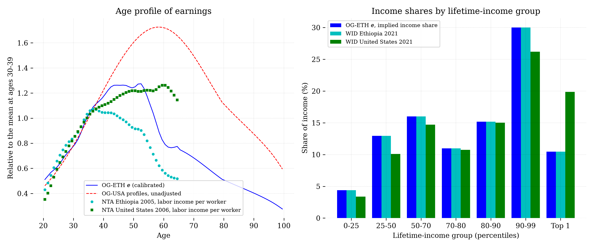
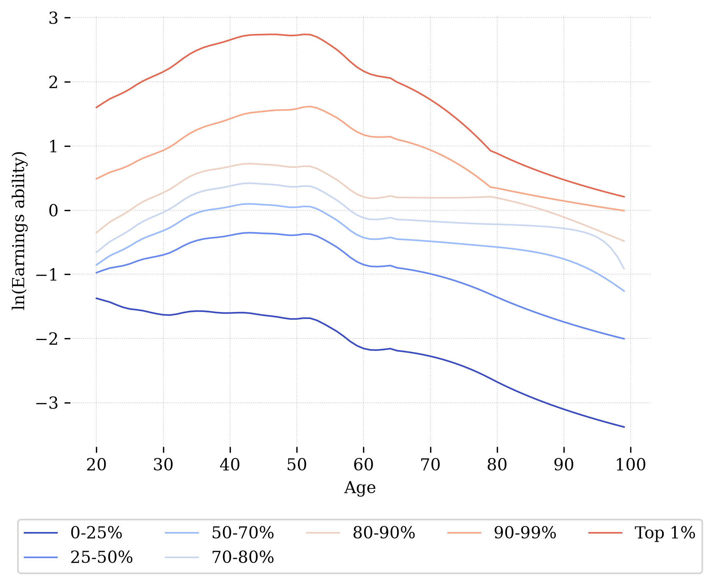

Lifetime Earnings Profiles#
Among households in OG-ETH, we model variations in labor productivity over the lifecycle and between households of different skill groups. Together, these variations generate a distribution of earnings. This chapter describes how the lifecycle earnings profiles are calibrated to Ethiopian data on the age profile of labor income and on the distribution of income across households.
Differences among workers’ productivity is one of the key dimensions of heterogeneity to model in a micro-founded macroeconomy. We characterize this heterogeneity as deterministic lifetime productivity paths to which new cohorts of agents in the model are randomly assigned. Households’ labor income comes from the equilibrium wage and the agent’s endogenous quantity of labor supply, augmented by an individual productivity \(e_{j,s}\), where \(j\) is the index of the ability type or path of the individual and \(s\) is the age of the individual with that ability path.
In this specification, \(w_t\) is an equilibrium wage representing a portion of labor income that is common to all workers. Individual quantity of labor supply is \(n_{j,s,t}\), and \(e_{j,s}\) represents a labor productivity factor that augments or diminishes the productivity of a worker’s labor supply relative to average productivity.
Approach#
Estimating lifetime productivity paths requires long panels of individual earnings, which do not exist for Ethiopia. As in the other OG-Core country models, we therefore start from the \(J=10\) profiles estimated for the United States in OG-USA [DeBacker et al., 2017], interpolate them onto the seven lifetime-income groups used here, \(\boldsymbol{\lambda}=[0.25, 0.25, 0.20, 0.10, 0.10, 0.09, 0.01]\), and then reshape them with Ethiopian data. The reshaping is the two-step method first proposed for OG-ZAF (EAPD-DRB/OG-ZAF#18), implemented here as a function that runs from the data rather than as fitted coefficients:
Over age, every US profile is multiplied by an age factor \(A_s\) built from National Transfer Accounts labor-income profiles, so that the shape of Ethiopian earnings over the lifecycle replaces the US one.
Across lifetime-income groups, each profile is scaled by a constant \(G_j\) so that the income shares the matrix implies for the seven groups equal the shares observed in the World Inequality Database for Ethiopia.
where \(\omega_{s,j}\) is the steady-state population distribution over age and lifetime-income group. What carries over from the US estimates is the shape of each profile over age; the level of every age relative to other ages and of every group relative to other groups is set by Ethiopian data. get_e_interp also accepts a caller’s own target shares (group_shares) or, as the sibling models do, a single Gini coefficient (gini_to_match), in which case the groups are tilted, \(e \cdot \exp(a e)\), until the Gini of \(e\) over the population equals the target.
This replaces the earlier calibration, shared with several sibling models, that tilted the US profiles with a single scalar so that the model reproduced the ratio of the two countries’ Gini coefficients. That approach used one number, and in OG-ETH the number was a World Bank consumption Gini for Ethiopia (31.1) set against an income Gini for the United States (41.5), which understated Ethiopian inequality by a wide margin (issue #33). The reshaping uses seven income shares and eighty ages instead of one statistic.
The code is in ogeth/income.py; python -m ogeth.income regenerates the packaged matrix from the packaged demographics and prints the comparison with the data.
Age factor from National Transfer Accounts#
The National Transfer Accounts project [National Transfer Accounts Project, 2022] publishes smoothed mean labor income per capita by single year of age. Ethiopia’s only profile is for 2005 (prepared by Terefe Degefa); the US profile closest in time is 2006. Labor income per capita mixes two things, how many people of an age work and how much each earns, and the model’s \(e_{j,s}\) is productivity per unit of labor supplied, with labor supply decided separately (see the labor supply section of Chap_Households). We therefore divide each per-capita profile by the ILOSTAT employment-to-population ratio of the same country and year (five-year age bands, interpolated), to obtain labor income per worker by age. Each per-worker profile is normalized to its mean over ages 20–64 and the age factor is their ratio:
Beyond 65 the employment ratio is a single open band in both countries, so per-worker earnings cannot be measured by age there; from 65 the factor is held at its mean over ages 60–64, and the shape of the profiles at older ages is the US shape (itself an arctan extrapolation for ages 80–100 in [DeBacker et al., 2017]). Little labor is supplied at those ages, so this matters little for the results.
Ethiopian earnings per worker peak earlier and fall faster after 50 than US earnings. The factor is about 1.5 at age 20, 1.3 at 25, 1.2 through the thirties, 1.05 at 45, 0.8 at 55 and 0.55 from 60. As a result the population-weighted age profile of \(e\) relative to the thirties is 0.63 in the twenties, 1.25 in the forties, 1.10 in the fifties and 0.75 in the sixties, where the US shape gives 0.60, 1.43, 1.69 and 1.63. This is the difference between an economy of long formal careers with returns to seniority and one where most work is physical and self-employed.
Group levels from the World Inequality Database#
The World Inequality Database (WID) [World Inequality Lab, 2024] publishes pre-tax national income shares by percentile group for equal-split adults; Ethiopia’s series (2021 is the latest estimate) is built from the household consumption surveys with a correction for top incomes. We read off the shares of the seven lifetime-income groups directly from the cumulative shares WID reports at the 25th, 50th, 70th, 80th, 90th and 99th percentiles, and choose \(G_j\) so that the share of total ability-weighted labor accruing to each group in the model, \(\sum_s e_{j,s}\omega_{s,j} / \sum_{s,j} e_{j,s}\omega_{s,j}\), equals the WID share. Because the shares are linear in \(G_j\), this is a single rescaling, and the resulting matrix reproduces the seven shares exactly.
Lifetime-income group |
\(\lambda_j\) |
WID share, Ethiopia 2021 |
Lifetime mean of \(e_{j,s}\) |
For reference: WID share, United States 2021 |
|---|---|---|---|---|
1 (bottom 25%) |
0.25 |
4.4% |
0.18 |
3.4% |
2 (25–50%) |
0.25 |
13.0% |
0.52 |
10.1% |
3 (50–70%) |
0.20 |
16.0% |
0.80 |
14.7% |
4 (70–80%) |
0.10 |
11.0% |
1.10 |
10.8% |
5 (80–90%) |
0.10 |
15.2% |
1.52 |
15.0% |
6 (90–99%) |
0.09 |
30.0% |
3.33 |
26.2% |
7 (top 1%) |
0.01 |
10.5% |
10.47 |
19.9% |
Results#


Fig. 13 Left: the population-weighted age profile of \(e\) against the unadjusted OG-USA profile and the two NTA per-worker profiles it is reshaped with (each relative to its mean at ages 30–39). Right: the income share of each lifetime-income group implied by \(e\) against the WID shares for Ethiopia and the United States.#


Fig. 14 Exogenous life cycle income ability paths \(\log(e_{j,s})\) with \(S=80\) and \(J=7\)#
Figure 14 shows the resulting \(J=7\) deterministic lifetime ability paths \(e_{j,s}\), and Figure 13 compares them with the data they are built from. The lifetime means of the seven groups run from 0.18 for the bottom quarter to 10.47 for the top percent, a ratio of 59 against 28 in the US profiles interpolated to the same groups and 8.8 in the previous Gini-tilted calibration. The Gini coefficient of \(e\) over the model population is 0.520, against WID’s 0.516 for Ethiopia’s pre-tax income: the shares pin down inequality between the groups, and the variation of earnings over age within each group adds the small remainder.
Two alternatives were considered and are available through the function’s arguments. Tilting the groups to WID’s Gini alone (gini_to_match=0.516) puts the top percent at 24 times the average and the bottom quarter at 0.36, because a single-parameter tilt can only stretch the distribution proportionally; the seven shares are a richer target. Scaling the groups by Ethiopia’s shares relative to the US shares — a ratio approach in the spirit of the family’s Gini-ratio method — gives a Gini of only 0.35 and a bottom quarter at 0.54, because it inherits the wedge between the OG-USA profiles (lifetime labor earnings of workers, with a bottom-quarter share of 10 percent) and WID’s annual income per adult (3.4 percent in the United States). We impose Ethiopia’s shares directly: the distribution of income across households is one of the model’s focal outputs, and the data describe it without detour through the United States.
Limits#
Three limits are worth stating plainly. First, WID’s pre-tax national income includes capital income, which is more concentrated than labor income, so imposing its shares on the labor-ability matrix overstates the concentration of earnings at the top; WID publishes labor-income shares for the United States but not for Ethiopia, so the correction cannot be made from the same source. Second, the model has no non-employment: every household of working age supplies labor, whereas WID’s adult population includes people with no income. Ethiopia’s employment ratios of 80–90 percent at working ages make this less of a distortion than it would be for the United States, but the bottom quarter’s share of 4.4 percent is partly people with no income rather than low earnings. Third, the Ethiopian NTA profile is from 2005 and WID’s Ethiopian estimate rests on consumption surveys with a borrowed top correction; no Ethiopian earnings panel exists to check either. The 2021/22 Ethiopia Socioeconomic Panel Survey has individual wages and hours and would allow a cross-sectional check of both the age profile and the shares when its microdata are used.